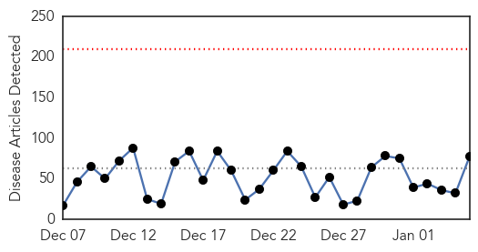
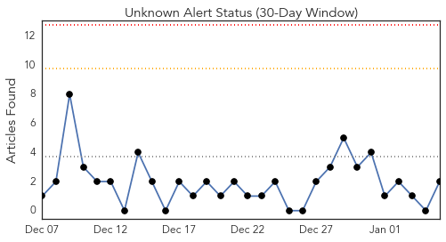
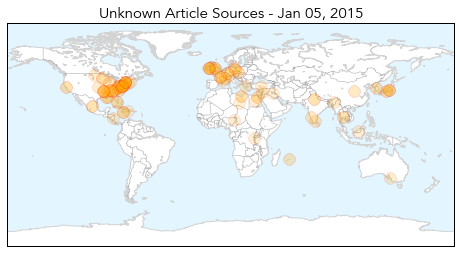
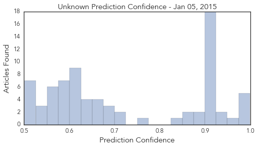

Unknown
30-Day Web Trend
0 alerts, 0 warnings

30-Day Twitter Trend
0 alerts, 0 warnings

Article Locations

Article Confidences
Top Articles:
- 0.999
- Flu season again requires precautions
- 0.998
- Flu cases, hospitalizations rise sharply as season peaks
- 0.998
- Flu season continues to worsen
- 0.990
- CDC declares national flu epidemic
- 0.979
- UPDATE: Chattanooga Ranks #1 for Flu Activity - WRCBtv.com
- 0.956
- Teenager's Death Shows How Flu Can Be Fatal
- 0.933
- Flu season Rx: Good hygiene, shot recommended for troops overseas this year
- 0.931
- Flu cases on the rise in Delaware — NewsWorks
- 0.917
- Chicago Tribune
- 0.917
- Chicago Tribune
- 0.917
- Chicago Tribune
- 0.917
- Chicago Tribune
- 0.917
- Chicago Tribune
- 0.917
- Chicago Tribune
- 0.917
- Chicago Tribune
- 0.917
- Chicago Tribune
- 0.917
- Chicago Tribune
- 0.917
- Chicago Tribune
- 0.917
- Chicago Tribune
- 0.917
- Chicago Tribune
- 0.917
- Chicago Tribune
- 0.917
- Chicago Tribune
- 0.917
- Chicago Tribune
- 0.917
- Chicago Tribune
- 0.910
- The world windows to Thailand
- 0.903
- Officials Discuss Flu Prevention in West Virginia Schools
- 0.890
- Flu hitting Arkansas hard this year
- 0.878
- Flu hits East Tennessee hard, Knoxville among sickest cities in the nation
- 0.866
- Hollande says plans to attend Jan 15 four-way Ukraine talks
- 0.863
- First bird flu death of 2015 child who was infected in 2014: Spox
- 0.848
- The World On Arirang
- 0.753
- Local warning issued over winter sickness bug which has closed wards at local hospitals
- 0.724
- Modernisation of public health sector
- 0.715
- School districts fighting against flu
- 0.694
- Giant Panda Dies of Canine Distemper, 3 More Infected; China Closes Wildlife Centre
- 0.689
- W.Va. officials join forces to fight flu in schools
- 0.689
- W.Va. officials join forces to fight flu in schools
- 0.674
- Health Minister Shri J P Nadda reviews JS AES cases in
- 0.668
- Free flu shots all across Shelby County Tuesday
- 0.659
- Schools prep for students to return back to school amidst flu season
- 0.657
- AES cases in Tamil Nadu, Odisha Current News, Odisha Latest Headlines
- 0.635
- Doctors blame lack of resources for poor health care
- 0.630
- Five hospitals declare 'major incidents'
- 0.630
- Five hospitals declare 'major incidents'
- 0.626
- Hospital trolley crisis deepens
- 0.625
- Half of Diphu Public Health Engineering Department Schemes are Out of Order
- 0.617
- Hospital trolley crisis deepens
- 0.608
- Study finds CDC recommendations ignored health risks
- 0.604
- Jamaican doctors blame lack of resources for poor health care -- NationNews Barbados -- Local, Regional and International News nationnews.com
- 0.603
- FAO, Partners Seek Global Response to Deadly Crop Disease, Articles
Showing top 50 articles...
Top Tweets:
- 0.548
- Treatment with flu antivirals is recommended for ppl at high risk of serious flu complications & ppl very sick w/ flu http://t.co/aUgDez7fCv
Influenza
30-Day Web Trend
1 alerts, 0 warnings

30-Day Twitter Trend
7 alerts, 0 warnings

Article Locations


Article Confidences

Top Articles:
- 1.000
- Flu cases increase in Emporia
- 1.000
- Flu epidemic continues to rage with six children killed in one week
- 1.000
- Influenza season strikes early and hard
- 0.999
- Nine people died of flu-related causes in North Carolina during Christmas week
- 0.999
- Officials warn of flu outbreaks at schools
- 0.999
- Widespread flu outbreak in Connecticut
- 0.999
- Centers for Disease Control says nation's flu epidemic is getting worse
- 0.998
- Flu Season Takes Another Turn For The Worse
- 0.998
- Flu season is here — and it could get worse
- 0.998
- Flu season has arrived in NM
- 0.997
- The flu didn't take a holiday in the Carolinas
- 0.995
- Flu is in decline locally, but still dangerous
- 0.994
- Maritime Quarantine & Isolation
- 0.994
- Schools battle flu outbreak
- 0.990
- Flu on the rise in Fond du Lac, across Wisconsin
- 0.989
- 2nd Lucas County resident dies of flu-related complications
- 0.989
- Flu Spike Expected As Kids Return To School « CBS Minnesota
- 0.988
- Flu outbreak affecting more than half of Alabama's 67 counties; state still among tops nationwide
- 0.987
- Hospital tightens rules amid flu outbreak
- 0.987
- Local flu cases declining by end of 2014, but still high
- 0.985
- Feeling sick? Then stay home
- 0.979
- Influenza Widespread Across Much of United States
- 0.969
- Flu widespread in Rhode Island
- 0.960
- Doctor: Flu more common after school breaks
- 0.952
- New York City Requiring Flu Shots for Preschoolers
- 0.938
- BMC Pediatric Sickle Cell Disease Patients Achieve Near-Perfect Influenza Vaccination Rate
- 0.930
- B.C. child's death linked to enterovirus D68
- 0.913
- Trying to reduce spread of flu
- 0.911
- Flu shot may not be as effective this year, doctors still recommend it
- 0.856
- Free Flu Shots Available
- 0.803
- Avian Flu Scan for Jan 05, 2015
- 0.571
- Saint Thomas Rutherford to offer free flu shots
- 0.556
- More bird-flu cases in Washington State
Top Tweets:
-
No tweets found for Jan 05, 2015